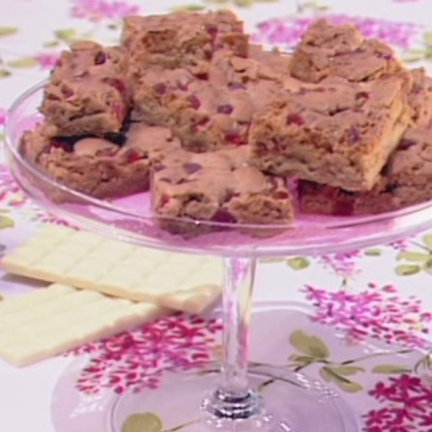

I 5 cocktail da bere anche al mattino | DeAbyDay
 In primo piano: Posta Stellare Gender is over Le ricette di Cucinare StancaCanali di Dea
DeA Today Società Carriere e Visioni Editoriali DeA Today Gallery Esperti Food Foodies Antipasti Primi Piatti Secondi Piatti Contorni Dolci Ricette base Drink e Cocktail Piatti unici Food News Gli esperti di Food Food Gallery Food Specials Fun Serie TV Fun People Viaggi Tempo Libero Smart Life Fun Tips Fun News Gli esperti di Fun Fun Test Fun Gallery Fun Specials Fit Allenamento a casa Fit People Dimagrire e tonificare Workout Outdoor Sport in gravidanza Yoga Fit Tips Fit News Esperti Fit Gallery Fit Specials Moda & Beauty Fashion People Make up Beauty Moda Unghie Capelli Tips Moda & Beauty Beauty News Gli esperti di Moda & Beauty Beauty Gallery Beauty Test Beauty Specials Love Kamasutra Hot People Amore Sesso Matrimonio Love Tips Love News Gli esperti di Love Love Gallery Love Specials Love Test Pets Cani Gatti Altri animali Alimentazione Pet Tips Pets News Pets Gallery Pets Specials Wellness Diete Alimentazione Prevenzione Cura Rimedi naturali Psiche Wellness Tips What's New Wellness News Esperti Wellness Gallery Wellness Specials Mamme La Scuola e i Bambini Neonati Nomi per Bambini Cartoni animati Gravidanza Adolescenza Salute Ricette per bambini Giochi Educazione Mamme Tips Mamme News Gli esperti di Mamme e bambini Mamme Gallery Mamme Specials Casa Domotica Arredamento Home Tips Money Housework Giardinaggio Home News Gli esperti di Casa Home Gallery Home Specials Oroscopo Oroscopo della moda Caratteristiche dei segni zodiacali Oroscopo dei regali Oroscopo delle serie TV Oroscopo del sesso Oroscopo dei libri Affinità di coppia Gli Ascendenti dei 12 Segni Zodiacali Come conquistare tutti e 12 i segni dello Zodiaco Oroscopo Cinese Oroscopo della primavera 2021 Oroscopo dell'estate 2021 Oroscopo delle mamme Posta StellarePicks di Dea
Le ricette di Cucinare Stanca Satisfashion by Andrea Batilla Le donne contano Posta del Cuore VIDEO PODCAST PEOPLE: L'ATTUALITA'About Dea
Chi Siamo Contattaci Pubblicità Home Food Drink e Cocktail I 5 cocktail da bere anche al mattino Drink e CocktailI 5 cocktail da bere anche al mattino
by Roberta Favazzo DeAbyDayAd ogni momento della giornata il suo cocktail: ecco quelli perfetti da bere al mattino (ma senza esagerare!).
Ad ogni momento della giornata il suo cocktail: ecco quelli perfetti da bere al mattino (ma senza esagerare!).Cocktail per la colazione ? Sì, avete letto bene: se siete amanti dei drink , potete fare vostra tale usanza che ha preso piede soprattutto nei paesi Anglosassoni. Qui, i breakfast drink spopolano generalmente presso gli hotel e, diciamoci la verità, se non dovessimo andare a lavoro, potremmo concederceli volentieri. Nessuno ci proibisce, però, di sorseggiarne uno in compagnia, magari quando abbiamo appuntamento con le amiche per una sessione di shopping o in occasione di un incontro di natura lavorativa. Sì, ma quale prediligere? Dal Bloody mary al Mimosa, ecco i cocktail da fare in casa perfetti per iniziare (o proseguire) la giornata. Ma prima una raccomandazione: ricordate di bere responsabilmente !
Foto: Olga Yastremska - 123.rf
Cocktail da bere al mattino: le scelte migliori
Che una piccola dose di alcool non possa che fornirci lo sprint ideale per affrontare gli impegni mattutini è cosa certa. Ma i cocktail leggeri da poter sorseggiare sono tanti: come destreggiarsi nel variegato mondo dei drink? Ecco quelli che, secondo noi, sono i migliori per le prime ore della giornata.
5. Cocktail da hangover: il Bloody Mary
Se non fosse per la vodka potremmo scambiarlo per un centrifugato (un toccasana per i postumi della sbornia)… almeno dati gli ingredienti .
Se vi sembra strano sentir parlare di un cocktail con pomodoro e sedano è perché, probabilmente, non avete mai assaggiato il Bloody Mary . Rosso e torbido, è dedicato alla regina inglese Maria la sanguinaria .
Foto: Brent Hofacker - 123.rf
4. Bollicine prima di pranzo: Mimosa
Il tipico cocktail da bere in compagnia delle amiche, magari nell'ambito di un aperitivo prima di pranzo.
A base di champagne, succo di arancia e poco altro, il Mimosa si caratterizza per il vivace colore giallo, e viene spesso abbinato alla Festa delle donne .
3. Analcolico al sapore d’America: il San Francisco
Adorato, come il precedente, dall’universo femminile, il San Francisco nasce negli anni '30 nell’omonima città americana.
Rientra tra i cocktail analcolici - perfetto per gli astemi, quindi - ma ha un sapore talmente fresco che va a genio anche ai bevitori incalliti.
Foto: serezniy - 123.rf
2. Cocktail fruttato: Sex on the Beach
Fresco e fruttato, nonostante sia ideale da bere dopo cena, il Sex on the Beach è apprezzato anche prima dei pasti, in occasione di un aperitivo spumeggiante, magari vista mare.
Va servito rigorosamente con ghiaccio e tanta frutta colorata ed invitante.
1. Bellini cocktail, il long drink tutto italiano
Long drink italiano, il Bellini cocktail ha come base una purea di pesca e l’aggiunta di vino bianco frizzante.
Ideato nel 1948 il suo apprezzamento nel Mondo non conoscere arresto.
Foto apertura: Olga Yastremska - 123.rf
tag:
cocktail alcolici drink cocktail classiciti potrebbe interessare
] Drink e CocktailI dieci cocktail più famosi della storia
by redazione
Drink e CocktailAperitivo analcolico: 5 cocktail gustosi e facili da preparare
by Maddalena Ghezzi
Dea by Food
Piatti uniciFrench toast salato: ricetta semplice e gustosa (anche veg)
by Roberta Favazzo
DolciBignè orgogliosi: l'omofobia stanca
by Cucinare Stanca
Primi PiattiPasta con i peperoni e panna, la ricetta perfetta per il pranzo
by Roberta Favazzo
Deabyday è anche social
Follow us
Chi siamo Contattaci Pubblicità Condizioni d’uso Privacy Cookies De Agostini ModelSpace Magiki Egyxos Catturalitutti.it DeA Kids DeA Junior Sapere.it Cure naturali Crescita personale DeA Scuola Garzanti Linguistica DeA Learning Scuola.com Black Cat-Cideb DeA Planeta Libri De Agostini Geografia Utet Libri Libromania © 2021 Copyright De Agostini Editore - I contenuti sono di proprietà di De Agostini Editore S.p.a., è vietata la riproduzione.
De Agostini Editore S.p.A. sede legale in via G. da Verrazano 15, 28100 Novara - Capitale sociale euro 50.000.000 i.v. - Codice fiscale ed iscrizione al Registro imprese di Novara n. 01689650032, REA di Novara 191951 Società aderente al “Gruppo IVA B&D Holding” Partita IVA 02611940038 28100 Novara - Società con Socio Unico, Società coordinata e diretta da De Agostini S.p.A. - Sede legale in via G. da Verrazano 15, 28100 Novara (Italia)